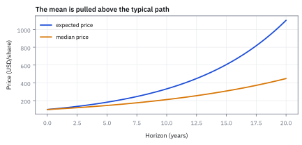
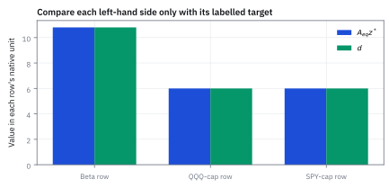
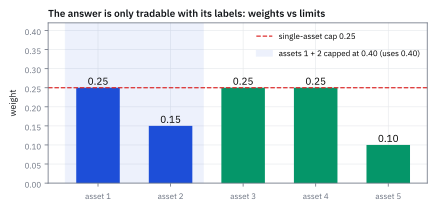

11.2 Standard Form of a Linear Program
เขียนโจทย์เลือกค่าที่ดีที่สุดในรูปมาตรฐาน
กองทุนถือหุ้น 5 ตัว ตัวที่ 1 และ 2 เป็นธนาคาร กฎคือ ลงเงินครบ 100% ห้าม short ห้ามเกิน 25% ต่อตัว และธนาคารรวมไม่เกิน 40% ผู้จัดการเสนอ 30/20/20/20/10 ผ่านกฎไหม?
เฉลย: ไม่ผ่าน เขียนกฎเป็นตารางได้ 11 แถว ตก 2 แถว คือตัวแรก 30% เกินเพดาน 25% และธนาคาร 50% เกิน 40% แก้เป็น 25/15/25/25/10 ผ่านครบ 11 แถว
linear program (LP) คือโจทย์เลือกค่าที่ดีที่สุดเมื่อเป้าหมายและข้อจำกัดเป็นเส้นตรง standard form จัดทุกกฎให้อยู่ในตารางตัวเลขรูปเดียว ระบบตรวจกฎก่อนส่งคำสั่งจึงคูณ matrix ครั้งเดียวแล้วเทียบกับเพดาน
ตัวอย่างแรก — แปลหนังสือชี้ชวนให้เป็น matrix
เริ่มจากโจทย์เปิดเรื่อง กฎที่เขียนเป็นภาษาคนสี่ข้อจะกลายเป็นตารางตัวเลข แล้วการตรวจพอร์ตทั้งหมดคือการคูณหนึ่งครั้ง
ศัพท์ที่ใช้ในหัวข้อนี้
- standard form
- รูปของ linear program ที่ใช้ equality constraints และ non-negative variables ใช้ส่ง problem เข้า solver ด้วย convention ที่ audit ได้
- decision variable
- quantity ที่ solver เลือก เช่น hedge notional ใช้แทน order sizes ที่ต้องหา
- slack variable
- ตัวแปรไม่ติดลบที่เติมใน upper-bound inequality ใช้วัด capacity ที่ยังไม่ได้ใช้และเปลี่ยน inequality เป็น equality
- surplus variable
- ตัวแปรไม่ติดลบที่ลบออกจาก lower-bound inequality ใช้วัดปริมาณที่ทำเกิน minimum requirement
- non-negativity
- ข้อกำหนดว่าตัวแปรต้องไม่ต่ำกว่าศูนย์ ใช้รักษาความหมายของ hedge size, slack และ surplus
- binding constraint
- constraint ที่มี slack หรือ surplus เป็นศูนย์ ใช้ระบุ limit ที่กำหนด optimum จริง
- prospectus
- หนังสือชี้ชวนที่กองทุนประกาศกฎการลงทุนต่อผู้ถือหน่วย ใช้เป็นแหล่งของข้อจำกัดที่ต้องแปลงเป็นแถวของ matrix
- infeasible
- สถานะที่ไม่มีคำตอบใดผ่านข้อจำกัดครบทุกข้อ ใช้เตือนว่ากฎขัดกันเอง ต้องแก้กฎก่อน ไม่ใช่แก้ solver
- convex set
- เซตที่ถ้าหยิบพอร์ตสองพอร์ตในเซต พอร์ตผสมทุกแบบระหว่างสองพอร์ตนั้นก็อยู่ในเซตด้วย ใช้รับประกันว่าผสมพอร์ตที่ผ่านกฎสองพอร์ตแล้วยังผ่านกฎ
- polytope
- รูปทรงหลายเหลี่ยมที่เกิดจากข้อจำกัดเชิงเส้นหลายข้อตัดกัน ใช้เป็นภาพของพื้นที่คำตอบของ LP ซึ่งคำตอบที่ดีที่สุดอยู่ที่มุม
- pre-trade check
- การตรวจพอร์ตหลังคำสั่งกับกฎทั้งหมดก่อนส่งเข้าตลาด ใช้กันคำสั่งที่ผิดกฎออกไปถึงตลาด
- constraint matrix
- matrix ของ coefficients ที่ map decision variables ไปยังทุก constraint ใช้ให้ row labels, units และ arithmetic อยู่ในวัตถุเดียว
- right-hand side
- vector ของ targets และ limits ที่อยู่ฝั่งขวาของ equalities ใช้เป็นยอดที่แต่ละ constraint row ต้อง reconcile
สัญลักษณ์ที่ใช้ในหัวข้อนี้
| สัญลักษณ์ | ความหมาย | หน่วย |
|---|---|---|
| $x_Q,x_S$ | short notionals ของ QQQ และ SPY | USD million |
| $s_B$ | beta-exposure surplus เหนือ requirement 10.8 | beta-USD million |
| $s_Q,s_S$ | unused QQQ และ SPY capacity | USD million |
| $z$ | vector ที่รวม decision, surplus และ slack variables | แต่ละ component ใช้หน่วยของตัวเอง |
| $z^*$ | standard-form variable vector ณ optimal hedge | แต่ละ component ใช้หน่วยของตัวเอง |
| $A_{eq}$ | equality-constraint matrix | แต่ละ row แปลงเป็นหน่วยของ right-hand side แถวนั้น |
| $d$ | ตัวเลขฝั่งขวาของทุกข้อจำกัด ได้แก่ beta ที่ต้องลดให้ได้ และเพดานขนาดของแต่ละตัว | beta-USD million, USD million, USD million |
| $c$ | objective-cost vector | USD ต่อหน่วยของแต่ละ component |
| $C$ | execution cost รวม | USD |
| $s_i$ | slack หรือ surplus variable สำหรับข้อจำกัดแถวที่ $i$ | หน่วยของแถวนั้น |
| $w$ | น้ำหนักเงินของหุ้น 5 ตัวในกองทุนตัวอย่างแรก | สัดส่วนของเงินกองทุน |
| $A_{in},b_{in}$ | matrix และเพดานของข้อจำกัดแบบไม่เกิน หนึ่งแถวต่อหนึ่งกฎ | สัดส่วนของเงินกองทุน |
| $I_5,\ \mathbf{1}$ | identity matrix ขนาด 5 × 5 และ vector ที่มีเลข 1 ทุกช่อง | ไม่มีหน่วย |
ขั้นที่ 1 — ของที่โจทย์ให้: หุ้น 5 ตัว กฎ 4 ข้อ และพอร์ตที่เสนอ
ตัวเลขชุดนี้คือของที่โจทย์ให้ ตัวแปรตัดสินใจคือ w น้ำหนักเงินของหุ้นแต่ละตัว ทุกกฎคือรั้วที่ครอบ w
หุ้นตัวที่ 1 และ 2 อยู่ในกลุ่มธนาคาร กฎสี่ข้อคือ ลงเงินครบ 100% ห้าม short ห้ามเกิน 25% ต่อตัว และธนาคารรวมไม่เกิน 40% เลข 0.25 กับ 0.40 จะไปอยู่ฝั่งขวาของข้อจำกัด ไม่ได้อยู่ใน matrix
ขั้นที่ 2 — หนึ่งประโยคคือหนึ่งแถว: ได้ 1 สมการกับ 11 อสมการ
กติกาแปล: หนึ่งเงื่อนไขเป็นหนึ่งแถว ตัวเลขในแถวบอกว่านับหุ้นตัวไหนเท่าไร อสมการทุกข้อเขียนเป็นแบบไม่เกินให้หมด เพราะ solver รับรูปเดียว
ห้าม short เขียนเป็น w ≥ 0 ซึ่งเป็นแบบไม่น้อยกว่า คูณ −1 ทั้งสองข้างแล้วเครื่องหมายพลิกเป็น −w ≤ 0 เครื่องหมายลบหน้า I มาจากตรงนี้ ไม่ได้แปลว่าน้ำหนักติดลบ
นับแถว: ห้าม short 5 แถว เพดาน 25% อีก 5 แถว ธนาคาร 1 แถว รวม 11 แถว A_in จึงมีขนาด 11 × 5 และ b_in มี 11 ช่อง
ขั้นที่ 3 — ตรวจพอร์ตที่เสนอด้วยการคูณครั้งเดียว
คูณ A_in กับ w แล้วเทียบกับ b_in ทีละแถว แถวไหนเกินคือกฎที่ละเมิด
ผ่าน 9 แถว ตก 2 แถว: แถว 6 คือหุ้นตัวแรกเกินเพดานรายตัว 0.05 และแถว 11 คือธนาคารเกินเพดานกลุ่ม 0.10 กฎแบบนี้ต้องผ่านทุกแถว ไม่มีการเฉลี่ยคะแนน พอร์ตนี้จึงใช้ไม่ได้
ขั้นที่ 4 — แก้ให้ผ่านโดยขยับน้อยที่สุด
กดสองตัวที่เป็นปัญหาลงให้พอดีเพดาน แล้วย้ายเงินที่ปลดออกไปใส่ตัวที่ยังมีที่ว่าง
ตัวแรกลงมาชนเพดานรายตัวพอดี ตัวที่สองลงจน 0.25 + 0.15 = 0.40 ชนเพดานธนาคารพอดี เงิน 0.10 ที่ปลดออกไปอยู่ที่ตัวที่ 3 และ 4 ซึ่งยังว่างตัวละ 0.05 ผลคือผ่านครบ 11 แถว
มีสี่แถวที่ชนพอดี คือเพดานของตัวที่ 1, 3, 4 และเพดานธนาคาร เรียกว่า binding constraint หัวข้อ 11.3 จะแสดงว่าเฉพาะแถวที่ชนพอดีเท่านั้นที่มีราคา: ถ้าผ่อนกฎข้อนั้นได้อีก 1% จะได้อะไรเพิ่ม ส่วนกฎที่ยังมีที่ว่าง เช่นห้าม short ผ่อนไปก็ไม่ได้อะไร
ขั้นที่ 5 — ตรวจก่อนว่ากฎชุดนี้มีทางออก: เลขคณิตสามบรรทัด
กฎที่ขัดกันเองทำให้ไม่มีพอร์ตไหนผ่านได้ solver จะตอบแค่ว่า infeasible โดยไม่บอกว่ากฎข้อไหน การคูณสามบรรทัดนี้ชี้ตัวการได้ก่อนรัน
บรรทัดแรก: ถ้าทุกตัวเต็มเพดานก็ยังรวมได้ 1.25 จึงพอใส่ครบ 100% บรรทัดที่สอง: ธนาคารถือได้มากสุด 0.40 อีกสามตัวต้องแบกอย่างน้อย 0.60 และแบกได้มากสุด 0.75 จึงยังมีทางออก
บรรทัดล่าง: ถ้าเพดานรายตัวเป็น 15% ต่อให้ทุกตัวเต็มก็รวมได้แค่ 0.75 ไม่มีพอร์ตไหนลงเงินครบ 100% ได้เลย ในกองทุนจริงกฎมักถูกเพิ่มทีละข้อโดยคนละทีม แล้วมาขัดกันเอง อาการคือระบบ rebalance รันไม่ผ่านตั้งแต่เช้า
ขั้นที่ 6 — กฎเป็นเชิงเส้น และพอร์ตที่ผ่านกฎรวมกันเป็นเซตนูน
ลองแถวธนาคาร f(w) = w₁ + w₂ กับสองพอร์ต แล้วผสมครึ่งต่อครึ่งสองทาง ถ้าเป็นเชิงเส้น สองทางต้องได้เลขเดียวกัน
ผสมก่อนแล้วนับ หรือนับก่อนแล้วผสม ได้ 0.45 เท่ากัน กฎนี้จึงเป็นเชิงเส้น ผลพวงที่สำคัญคือ ผสมพอร์ตที่ผ่านกฎสองพอร์ต ได้พอร์ตที่ผ่านกฎเสมอ สามบรรทัดล่างเอา w′ กับพอร์ตเท่ากัน v มาผสม ผ่านครบทุกข้อ
พื้นที่ของพอร์ตที่ผ่านกฎจึงเป็นเซตนูน เกิดจาก 11 อสมการตัดกับ 1 สมการ เรียกว่า polytope ข่าวดีคือคำตอบที่ดีที่สุดของ LP อยู่ที่มุมเสมอ ไม่มีหลุมหลอกให้ติด ค่าที่ดีที่สุดในละแวกคือค่าที่ดีที่สุดของทั้งปัญหา
คำตอบ — 11 แถว ตก 2 แก้แล้วผ่านครบ
คำถาม: เขียนกฎสี่ข้อเป็น matrix พอร์ต 30/20/20/20/10 ผ่านไหม และแก้อย่างไร?
ของที่มี: ขั้นที่ 1 ถึง 6
1. A_eq คือแถวของเลข 1 ห้าตัว b_eq = 1 ส่วน A_in ขนาด 11 × 5 คือ −I ซ้อน I ซ้อนแถว (1, 1, 0, 0, 0) กับ b_in = (0 ห้าช่อง, 0.25 ห้าช่อง, 0.40)
2 พอร์ตที่เสนอตกแถว 6 (0.30 > 0.25) และแถว 11 (0.50 > 0.40)
3 แก้เป็น 25/15/25/25/10 ผ่านครบ มีสี่แถวที่ชนพอดี
เฉลย: w′ = (0.25, 0.15, 0.25, 0.25, 0.10)
เช็ก 10 วินาที: ผลรวม 1.00, ต่ำสุด 0.10, สูงสุด 0.25, สองตัวแรก 0.40
งานจริง: ทุกบรรทัดในหนังสือชี้ชวน คู่มือ compliance และ limit ที่ risk manager ตั้ง แปลงเป็นแถวของ A ได้ ระบบ pre-trade check จึงเร็วมาก เพราะไม่ได้อ่านกฎ แต่คูณ matrix ครั้งเดียวแล้วเทียบ vector กองทุนหุ้นขนาดกลางมีราว 300 ถึง 800 แถว ข้อจำกัดคือเขียนได้เฉพาะกฎเชิงเส้น กฎอย่าง tracking error ไม่เกิน 4% เป็นทรงรี ต้องใช้ quadratic constraint ในบทที่ 12
กับดัก: เพดาน 25% ใช้ได้เพราะมี 5 ตัว ถ้ากองทุนถูกบังคับให้ถือตะกร้าแค่ 3 ตัว กฎเดิมกลายเป็น infeasible ทันที เพราะ 3 × 0.25 = 0.75 < 1 เพดานรายตัวกับจำนวนหลักทรัพย์ต้องออกแบบคู่กันเสมอ
โค้ดตรวจกฎทั้ง 11 แถว
import numpy as np
Ain=np.vstack([-np.eye(5),np.eye(5),[[1,1,0,0,0]]])
bin_=np.r_[np.zeros(5),0.25*np.ones(5),0.40]
assert Ain.shape==(11,5)
w=np.array([.30,.20,.20,.20,.10])
ok=Ain@w<=bin_+1e-12
assert ok.sum()==9 and list(np.where(~ok)[0]+1)==[6,11]
w2=np.array([.25,.15,.25,.25,.10])
assert abs(w2.sum()-1)<1e-12 and (Ain@w2<=bin_+1e-12).all()
assert np.isclose(Ain@w2,bin_).sum()==4
mid=(w2+np.full(5,.2))/2
assert (Ain@mid<=bin_+1e-12).all() and abs(mid.sum()-1)<1e-12โค้ดนี้สร้าง A_in ขนาด 11 × 5 ตรวจว่าพอร์ตที่เสนอตกแถว 6 กับ 11 พอร์ตที่แก้แล้วผ่านครบและชนพอดีสี่แถว และจุดกึ่งกลางกับพอร์ตเท่ากันยังผ่านกฎ
นิยาม — รูปทั่วไปของ LP และกติกาแปลงอสมการให้เป็นสมการ
ตัวอย่างแรกใช้รูป A_eq w = b_eq กับ A_in w ≤ b_in ซึ่งเป็นรูปทั่วไปของ LP บาง solver ต้องการสมการล้วนกับตัวแปรไม่ติดลบ กติกาพื้นฐานในการแปลงโจทย์ linear program ทั่วไปให้อยู่ในรูปมาตรฐาน มีหลักการตายตัวสามข้อ คือการลบ surplus สำหรับขอบล่าง การบวก slack สำหรับขอบบน และการกลับเครื่องหมายสำหรับโจทย์ maximize โดยตัวแปรทุกตัวในระบบใหม่ต้องไม่ติดลบเสมอ
อสมการแบบมากกว่าหรือเท่ากับ หมายถึงฝั่งซ้ายผลิตผลลัพธ์เกินค่าขอบล่าง $b_i$ เราจึงนิยาม surplus variable $s_i \ge 0$ ขึ้นมาหักส่วนเกินออกเพื่อให้กลายเป็นสมการพอดี
สำหรับอสมการแบบน้อยกว่าหรือเท่ากับ ฝั่งซ้ายใช้ทรัพยากรไม่เกินเพดาน $b_i$ เราจึงบวก slack variable $s_i \ge 0$ เพื่อชดเชยกำลังการผลิตที่ยังว่างอยู่ให้เต็มยอด
หากโจทย์เดิมเป็น maximize เราแปลงเป็น minimize ได้ด้วยการกลับเครื่องหมายลบของ objective function เมื่อรวมตัวแปรทั้งหมดเป็น vector $z \ge 0$ จะได้ระบบสมการเชิงเส้น $A_{\text{eq}}z = d$ ที่ solver จัดการได้ทันที
ตัวอย่างที่สอง — hedge ของหัวข้อ 11.1 ในรูปมาตรฐาน
โจทย์ให้อะไรมาบ้าง: จากหัวข้อ 11.1 เรา minimize $180x_Q+90x_S$ ภายใต้ beta requirement 10.8 และ caps ตัวละ 6 การเข้า standard form ห้ามเปลี่ยน feasible set หรือ optimum; มันเพียงเพิ่ม variables ที่บอกว่ายังเหลือหรือทำเกินเท่าไร
ขั้นที่ 7 — เริ่มจาก inequalities เดิม
โจทย์จริงมาในรูปที่ไม่เป็นระเบียบ มีทั้งมากกว่าและน้อยกว่าปนกัน เริ่มจากเขียนมันตามที่เป็นก่อน
เป้าหมายความเสี่ยงของพอร์ตต้องการลด beta exposure รวมอย่างน้อย 10.8 beta-USD million ซึ่งเป็นข้อจำกัดแบบมากกว่าหรือเท่ากับที่ต้องทำให้ผ่าน
สภาพคล่องในตลาดจริงมีขีดจำกัด จึงต้องกำกับไม่ให้คำสั่งขาย QQQ และ SPY เกินเพดานตัวละ \$6 ล้านตามนโยบายของ desk กลายเป็นข้อจำกัดแบบน้อยกว่าหรือเท่ากับ
ขนาดการขาย short ต้องเป็นค่าบวกหรือศูนย์เท่านั้น เพื่อไม่ให้กลายเป็นการซื้อสินทรัพย์เสี่ยงเพิ่ม การจำแนกประเภทข้อกำหนดเหล่านี้คือขั้นตอนแรกของการจัดรูปสู่ standard form
ขั้นที่ 8 — ลบ surplus จาก lower bound
แปลงข้อบังคับแบบ 'อย่างน้อย' ให้เป็นสมการ โดยหักส่วนที่เกินออกเป็นตัวแปรใหม่
เริ่มต้นจากอสมการขอบล่างเดิม แล้วย้าย 10.8 ไปลบทางซ้ายเพื่อให้ฝั่งขวาเป็นศูนย์ ผลต่างทางฝั่งซ้ายคือปริมาณ beta exposure ที่ส่งมอบเกินกว่าเกณฑ์ขั้นต่ำ
เรานิยามตัวแปรส่วนเกิน $s_B \ge 0$ ให้เท่ากับผลต่างนี้โดยตรง เพื่อให้ตัวแปรใหม่มีสถานะเป็น bookkeeping variable ที่ไม่ติดลบ
เมื่อย้าย 10.8 กลับมาฝั่งขวา จะได้สมการเชิงเส้นที่สมบูรณ์ หากที่จุด optimum คำนวณได้ $s_B=0$ แสดงว่าการ hedge พอดีกับข้อกำหนดอย่างแม่นยำ
ขั้นที่ 9 — เติม slack ให้ upper bounds
ทำแบบเดียวกันกับข้อบังคับแบบ 'ไม่เกิน' แต่คราวนี้เติมส่วนที่ยังเหลือเข้าไป
สำหรับเพดานสภาพคล่องของ QQQ ค่า $6-x_Q$ คือโควตาการขายที่ยังเหลือว่าง เรานิยาม slack variable $s_Q \ge 0$ มารองรับส่วนนี้ ทำให้ผลรวม $x_Q+s_Q=6$ พอดี
ในทำนองเดียวกันสำหรับ SPY เรานิยาม $s_S := 6-x_S \ge 0$ เพื่อบันทึก unused capacity ทำให้ข้อจำกัดกลายเป็นสมการ $x_S+s_S=6$
การใช้เครื่องหมายบวกกับ slack ช่วยรักษาระดับเพดานเดิมไว้โดยไม่บิดเบือน feasible region
ขั้นที่ 10 — รวมเป็น matrix equality
เมื่อทุกข้อกลายเป็นสมการหมดแล้ว รวบทั้งหมดเป็นรูป matrix เดียว ซึ่งเป็นรูปที่ตัวแก้ปัญหาทุกตัวรับได้
ผลคูณของ matrix แถวแรกกับ vector ตัวแปร ให้สมการ $1.2x_Q+x_S-s_B=10.8$ ตรงกับแถว beta พอดี
ส่วนข้อจำกัดสภาพคล่องในแถวล่างดึงเฉพาะตัวแปร $x_Q+s_Q$ และ $x_S+s_S$ เท่ากับ 6 ตามลำดับ ตำแหน่งที่ไม่เกี่ยวข้องถูกคูณด้วยศูนย์ทั้งหมด
โครงสร้างทั้งหมดรวมกันเป็นสมการเชิง matrix $A_{\text{eq}}z = d$ ภายใต้เงื่อนไข $z \ge 0$ ซึ่งพร้อมส่งต่อให้ solver ทางคอมพิวเตอร์ประมวลผลทันที
ขั้นที่ 11 — ใส่ objective ใน vector เดียว
ตัวแปรที่เพิ่มเข้ามาไม่มีต้นทุน จึงใส่ศูนย์ไว้ในตำแหน่งของมัน
vector ต้นทุน $c$ ใส่ค่าธรรมเนียม \$180 สำหรับ QQQ และ \$90 สำหรับ SPY ในสองตำแหน่งแรก
ตำแหน่งที่เหลืออีกสามช่องสำหรับตัวแปร surplus และ slacks ใส่ค่าเป็นศูนย์ เพราะตัวแปรเหล่านี้ทำหน้าที่บันทึกสถานะทางคณิตศาสตร์เท่านั้น ไม่ใช่คำสั่งซื้อขายจริงในตลาด
ผลคูณภายใน $c^{\mathsf T}z$ จึงคืนค่าต้นทุนการทำรายการที่เป็นตัวเงินดอลลาร์ตามเดิมอย่างแม่นยำ
ขั้นที่ 12 — ตรวจ optimum ใน standard form
ตรวจว่าคำตอบเดิมยังใช้ได้ในรูปใหม่ และดูว่าตัวแปรที่เพิ่มมาบอกอะไรเราบ้าง
แทนค่าคำตอบ $z^*=[4,6,0,2,0]^{\mathsf T}$ ลงในสมการแถวแรก ได้ผลลัพธ์ $4.8+6.0=10.8$ ปิดยอด beta constraint พอดี จึงมี surplus เป็นศูนย์
ตัวแปร slack ชี้ว่า QQQ ใช้โควตาไป 4 เหลือว่าง \$2 ล้าน ขณะที่ SPY ชนเพดานเต็มที่
ต้นทุนรวมคำนวณได้ 720 บวก 540 รวมเป็น \$1,260 เท่ากับต้นทุนเดิมทุกประการ ยืนยันว่าการแปลงเป็น standard form ไม่เปลี่ยนคำตอบของปัญหา
แล้วเอาไปใช้ทำอะไรได้จริงบ้าง
การเขียนโจทย์ในรูปมาตรฐานเป็นสะพานระหว่างปัญหาในหัวกับซอฟต์แวร์ที่แก้มันได้
ใช้ส่งปัญหาให้ตัวแก้ปัญหาสำเร็จรูป ซึ่งทุกตัวรับเฉพาะรูปแบบนี้ ไม่ว่าจะเป็นตัวฟรีหรือตัวเชิงพาณิชย์
ใช้ทำให้ปัญหาที่หน้าตาต่างกันกลายเป็นปัญหาเดียวกัน เช่นการจัดสรรพอร์ต การส่งคำสั่ง และการจับคู่คำสั่งซื้อขาย ล้วนเขียนได้ในรูปเดียวกันนี้
ใช้อ่านความหมายของตัวแปรที่เพิ่มเข้ามา ซึ่งบอกว่าข้อจำกัดข้อนั้นยังเหลือที่ว่างเท่าไร
งานบนโต๊ะเทรดที่เขียนเป็น LP ได้ตรง ๆ: หา arbitrage คือหาพอร์ตที่ต้นทุนติดลบแต่ payoff ไม่ติดลบทุกสภาวะ, index tracking ด้วยหุ้นจำนวนจำกัด, จับคู่กระแสเงินสดของพันธบัตรกับภาระกองทุนบำนาญ, แบ่ง order ใหญ่เป็นชิ้นเล็กภายใต้เวลาจำกัด และการลด CVaR ซึ่งแปลงเป็น LP ได้ในหัวข้อ 17.1
Figure 11.2a — รูปทรงของ LP ในรูปมาตรฐาน

Standard form ไม่เปลี่ยน feasible triangle ใน $(x_Q,x_S)$ projection; slack และ surplus เพียงบันทึกระยะจาก boundaries ของ triangle เดิม
Figure 11.2b — ใช้เงื่อนไขไปแล้วเท่าไร

Beta requirement และ SPY cap ใช้ 100% จึง binding ส่วน QQQ ใช้ 4 จาก 6 หรือ 66.7% ทำให้เหลือ slack \$2 ล้าน
Figure 11.2c — ตรวจแถวที่เป็นสมการเท่ากัน

ทั้งสาม left-hand sides ตรงกับ right-hand sides ที่ optimum การเทียบ row ต่อ row จับ coefficient, sign และ ordering errors ก่อนเรียก solver
Figure 11.2d — อ่านคำตอบของ solver เทียบกับขีดจำกัด

คำตอบ 25/15/25/25/10 ของ solver อ่านกลับทีละสินทรัพย์เทียบกับกติกาของ prospectus เพดานรายตัว 0.25 ชนพอดีสามตัว และสินทรัพย์ 1 กับ 2 รวมกันใช้เพดาน 0.40 เต็ม ตัวเลขจะเอาไปส่งคำสั่งซื้อขายได้ก็ต่อเมื่อลำดับ column กับชื่อสินทรัพย์ตรงกัน สลับ column โดยไม่สลับชื่อจะได้คำตอบที่คำนวณได้แต่ซื้อขายผิดตัว
คำตอบ — slack ชี้ว่า SPY cap เต็ม
คำตอบ: standard-form solution คือ z = [4,6,0,2,0] โดย QQQ ใช้ \$4 ล้าน, SPY ใช้เต็ม 6, surplus ของ beta constraint เป็นศูนย์, QQQ เหลือ capacity 2 และ SPY ไม่เหลือ capacity
ตรวจเองใน 10 วินาที: สาม equality rows ต้องให้ 1.2×4 + 6 - 0 = 10.8, 4 + 2 = 6 และ 6 + 0 = 6; objective 180×4 + 90×6 ต้องได้ \$1,260
ใช้ตัดสินใจ: SPY cap เป็น constraint ที่กำลังบีบคำตอบ ส่วน QQQ cap ยังผ่อนได้อีก \$2 ล้าน ข้อมูลนี้บอกทันทีว่าควรตีราคา capacity ฝั่งใดใน dual
กับดัก: ใช้ slack กับ lower bound ผิดเครื่องหมาย
minimum hedge requirement ต้องลบ surplus ไม่ใช่บวก slack ลองแทน no-trade ทุกครั้ง: ถ้า model สร้างตัวแปรไม่ติดลบมาช่วยให้ $(0,0)$ ผ่าน requirement 10.8 แสดงว่า equality ถูกเขียนกลับด้าน
ที่มาที่ไป: โจทย์วางแผนส่งกำลังบำรุงของกองทัพ
วิธีการในหัวข้อนี้เกิดขึ้นในปี 1947 เมื่อ George Dantzig ทำงานให้กองทัพอากาศสหรัฐฯ โจทย์คือการวางแผนส่งกำลังบำรุงที่มีทางเลือกมหาศาลและมีข้อจำกัดเต็มไปหมด
คำว่า programming ในชื่อวิธีนี้จึงไม่ได้แปลว่าการเขียนโปรแกรมคอมพิวเตอร์ แต่หมายถึงการวางแผนหรือจัดตาราง ตามภาษาที่กองทัพใช้ในยุคนั้น
ก่อนหน้านั้นปัญหาแบบนี้แก้ด้วยการเดาและลองปรับ ซึ่งไม่มีทางรู้ว่าคำตอบที่ได้ดีที่สุดหรือยัง สิ่งที่ Dantzig ให้คือวิธีที่รับประกันได้ว่าเจอคำตอบที่ดีที่สุดจริง
เงื่อนไขเดียวคือปัญหาต้องเขียนในรูปมาตรฐานเสียก่อน ซึ่งเป็นสิ่งที่หัวข้อนี้สอน
เบื้องหลังประวัติศาสตร์: ปัญหาการส่งกำลังบำรุงและกำเนิดของ Simplex
ในช่วงสงครามโลกครั้งที่ 2 และช่วงวิกฤตการณ์เบอร์ลิน (Berlin Airlift) กองทัพอากาศสหรัฐฯ ต้องเผชิญกับภารกิจส่งกำลังบำรุงที่ซับซ้อนอย่างยิ่ง การจัดสรรเครื่องบิน น้ำมัน อะไหล่ และเสบียงนับพันรายการ ไปยังฐานบินต่าง ๆ ภายใต้ข้อจำกัดของรันเวย์และเวลาบิน เป็นงานที่เสนาธิการหลายร้อยคนต้องใช้เวลาวางแผนด้วยมือนานหลายสัปดาห์ แต่วิธีลองผิดลองถูกบนกระดาษไม่เคยรับประกันได้เลยว่าแผนนั้นมีประสิทธิภาพสูงสุด หรือมีทางเลือกอื่นที่ประหยัดทรัพยากรกว่า
ในปี 1947 George Dantzig ซึ่งทำงานเป็นที่ปรึกษาทางคณิตศาสตร์ให้โครงการวางแผนของเพนตากอน ได้ค้นพบว่าปัญหาเหล่านี้สามารถเขียนเป็นระบบพีชคณิตที่มีเป้าหมายเป็น linear function ภายใต้ข้อจำกัดที่เป็นสมการและอสมการเชิงเส้น และเขาได้พัฒนา Simplex algorithm ขึ้นเพื่อค้นหาจุดยอดที่ดีที่สุดของทรงหลายเหลี่ยมได้อย่างเป็นระบบ
แต่หัวใจของ Simplex คือมันต้องการให้อสมการทั้งหมดถูกแปลงเป็นระบบสมการที่ตัวแปรทุกตัวไม่ติดลบเสียก่อน เรียกว่า standard form ซึ่งทำหน้าที่เป็นภาษากลางระหว่างมนุษย์กับคอมพิวเตอร์ การแปลงโจทย์จึงไม่ใช่แค่การจัดรูปพีชคณิต แต่เป็นการสร้างสัญญาทางคณิตศาสตร์ที่โปรแกรม solver ทุกตัวอ่านเข้าใจตรงกัน
ข้อจำกัด: วิธีนี้สมมติอะไร และของจริงเป็นอย่างไร
| เรื่อง | วิธีนี้สมมติว่า | ของจริงเป็นอย่างไร | ผลที่ตามมาเวลาใช้งาน |
|---|---|---|---|
| รูปของปัญหา | ทุกอย่างเป็นเส้นตรง | ต้นทุนการซื้อขายไม่เป็นเส้นตรง | ต้องประมาณเป็นเส้นตรงเป็นช่วง ๆ หรือเปลี่ยนไปใช้เครื่องมือที่รับความโค้งได้ |
| จำนวนเต็ม | ตัวแปรเป็นเลขทศนิยมได้ | จำนวนหุ้นและจำนวนสัญญาเป็นจำนวนเต็ม | คำตอบต้องปัด และการปัดอาจทำให้ผิดข้อจำกัด |
| ขนาด | แก้ได้ทุกขนาด | ปัญหาที่ใหญ่มากใช้เวลานานเกินกว่าจะทันรอบการเทรด | ต้องลดขนาดปัญหาหรือยอมรับคำตอบที่ดีพอแทนคำตอบที่ดีที่สุด |
แถวกลางฟังดูเล็กน้อยแต่สร้างปัญหาจริงบ่อยมากในพอร์ตที่มีสินทรัพย์ราคาสูงต่อหน่วย
สรุปที่ใช้ได้จริง
- กฎทุกข้อในหนังสือชี้ชวนเป็นหนึ่งแถวของ matrix: กฎสี่ข้อของกองทุนห้าตัวได้ 1 สมการกับ 11 อสมการ และพอร์ต 30/20/20/20/10 ตก 2 แถว ส่วน 25/15/25/25/10 ผ่านครบ
- ตรวจว่ากฎมีทางออกก่อนรัน solver: 5 × 0.25 = 1.25 ≥ 1 แต่ 5 × 0.15 = 0.75 < 1
- standard form เปลี่ยน inequalities เป็น equalities โดยไม่เปลี่ยน feasible set หรือ optimum
- lower bound ใช้ surplus ที่ถูกลบ ส่วน upper bound ใช้ slack ที่ถูกบวก
- $z^*=(4,6,0,2,0)$ ปิดยอดทุก constraint row และรักษา cost \$1,260
- variable order, row labels และ units ต้องเดินทางพร้อม matrix ทุกครั้ง